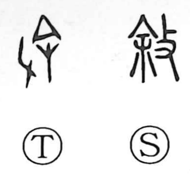

叙

Kun: noberu, tsuideru | On: jo
to state ・ to describe ・ to narrate ・ to arrange in sequence
Explanation
Originally written 敍, the character combines 余 and 攴. Shirakawa reads 余 as the image of a large needle with a handle, and 攴 as a hand wielding a twig-like implement. Together they portray pricking with a large needle to draw out pus and relieve an illness. From this act of easing and restoring, the sense shifted to putting things in proper order and telling them in sequence—hence meanings such as stating or describing in order, seen in compounds like 叙述 and 叙録.